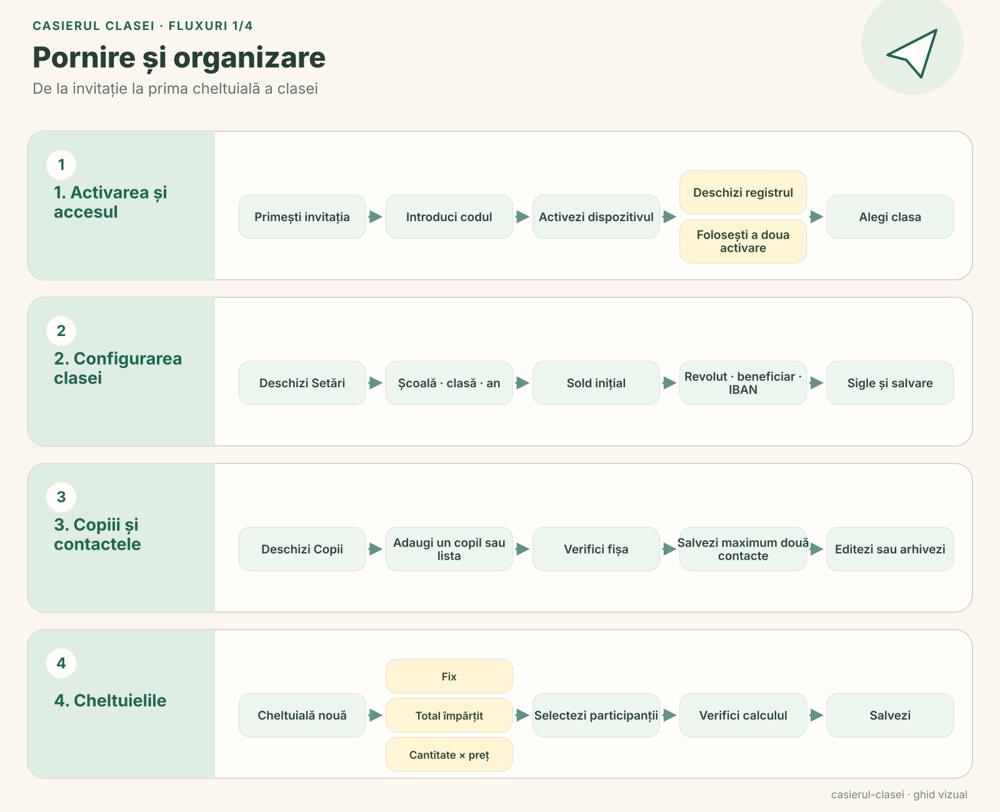
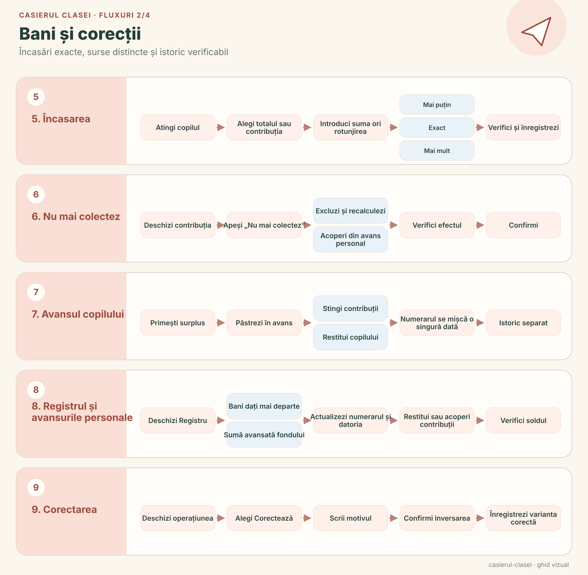
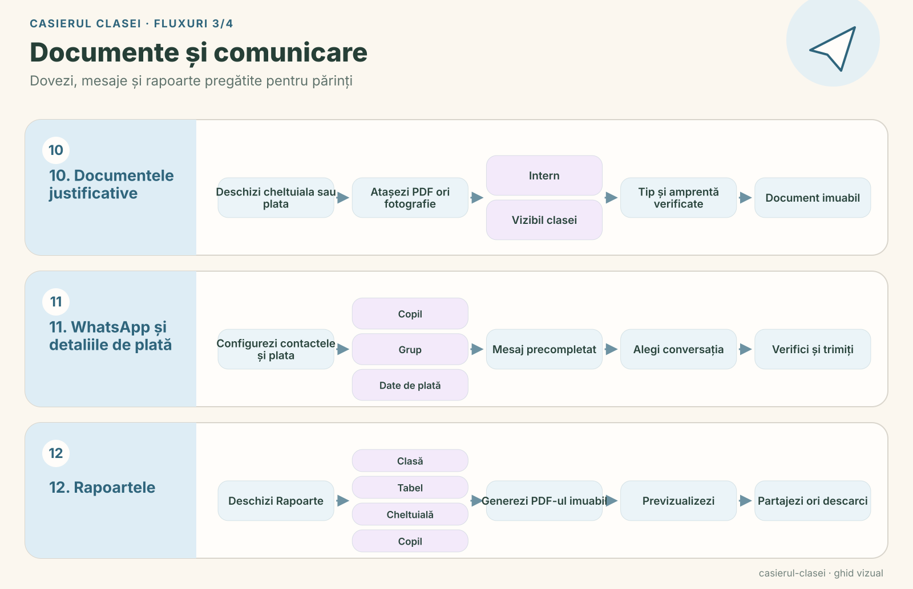
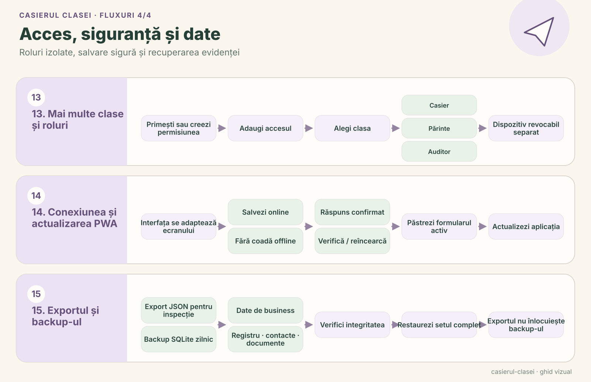

Acerca de la aplicación
Casierul clasei («el tesorero de la clase») es para el padre o la madre que se encarga del fondo de una clase. Reúne en un solo lugar las aportaciones de cada niño, los gastos de la clase y cada pago, para que el tesorero sepa siempre el saldo y quién debe todavía. Una sola instalación puede gestionar varias clases y colegios, cada uno con su propio registro separado.
La aplicación está en rumano, con importes en lei. El acceso es por invitación, para una clase y un rol cada vez. El tesorero puede verlo y cambiarlo todo. Un padre o una madre ve los totales de la clase y la cuenta de su hijo. Un auditor ve todo el registro y los informes sin poder cambiar nada. El acceso de solo lectura puede caducar en la fecha elegida. Una invitación puede activar dos dispositivos, por ejemplo un teléfono y un portátil.
Galería
Todos los datos de estas capturas son inventados.
como funciona
- Configure la clase. Añada el colegio, la clase y el curso escolar, y después los niños, uno a uno o pegando una lista.
- Cree gastos. Elija qué niños participan y cómo se reparte el coste: una cantidad fija por niño, un total dividido entre ellos o una cantidad por niño multiplicada por un precio unitario.
- Cobre el dinero. Toque un niño y elija todo lo que debe o un solo gasto. Unos botones grandes redondean el importe hacia arriba a los siguientes 5, 10, 50 o 100 lei, y la diferencia se devuelve como cambio o se guarda como anticipo.
- Pague y lleve las cuentas. Registre el dinero pagado, con su destino y, si quiere, el gasto al que corresponde, y siga el saldo de la clase en el registro.
Todos los flujos de un vistazo
Cuatro diagramas imprimibles recorren los 15 flujos, los mismos por los que guía la ayuda integrada de la aplicación. Como la aplicación, están en rumano.




Funciones
- La cuenta de cada niño: Aportaciones, importes pendientes, anticipos y el historial completo de cada niño.
- Anticipos que cuadran: Un anticipo puede cubrir más adelante otra aportación o devolverse, y usarlo nunca cuenta como dinero nuevo.
- Liquidado al cobrar: El anticipo de un niño se puede usar directamente en la pantalla de cobro, así que solo se pide el resto en efectivo. Si queda como mucho 1 leu, puede quedar pendiente, cubrirse con el anticipo o cerrarse como ajuste por redondeo. El efectivo en sí siempre se registra con exactitud.
- Dejar de cobrar: Cuando una aportación ya no se va a cobrar, el niño puede salir de un gasto repartido mientras aún sea posible, y se recalcula la parte de todos los demás. O la aportación puede cubrirse, en parte o por completo, con dinero que alguien adelantó al fondo. Así baja lo que la clase le debe a esa persona sin volver a mover efectivo, y el niño nunca aparece como pagado por sus padres.
- Correcciones sin borrar: Una operación confirmada se anula con una corrección aparte, con su motivo, así que el historial siempre queda completo.
- Exacto hasta el último ban: Los importes se guardan en bani enteros, los céntimos rumanos, y al repartir un total se distribuye exactamente hasta el último.
- Seguro con una conexión inestable: Guardar requiere internet, pero si se pierde una respuesta, un reintento confirma la misma solicitud sin registrar el pago dos veces. Los cambios hechos en otro dispositivo deben revisarse antes de guardar.
- Dinero adelantado al fondo: Cuando alguien paga algo para la clase de su propio bolsillo, la aplicación lo registra, lo vincula a un gasto si hace falta y muestra cuánto le debe aún la clase hasta que se le devuelva en parte o del todo.
- Justificantes: Adjunte PDF o fotos, como tiques de compra, a gastos y pagos. Cada archivo lleva una huella digital, y el tesorero decide si queda solo para el tesorero y los auditores o si lo ven también los padres de la clase.
- Informes PDF: Vea, comparta o descargue informes desde la propia aplicación, con colores: verde para pagado, amarillo para pagado en parte, rojo para atrasado y azul para saldos y dinero pagado. Cada PDF conserva los logotipos y colores del colegio y de la clase del momento en que se emitió.
- Cobertura de los gastos: El resumen de la clase, cada informe de gasto y la tabla de aportaciones muestran una barra y un porcentaje por gasto: cuánto de lo necesario está cubierto, con el dinero de los padres y lo cubierto por el fondo por separado.
- Recordatorios por WhatsApp: Guarde hasta dos contactos de WhatsApp por niño y abra un chat privado con el saldo del niño ya escrito, compartiendo también, si quiere, su informe en PDF. No se envía nada automáticamente, y los contactos solo los ve el tesorero: nunca los padres ni los auditores, y nunca aparecen en PDF ni exportaciones.
- Datos de pago: El enlace Revolut.me de la clase, el nombre del beneficiario y el IBAN se guardan en los ajustes y aparecen en los informes individuales, de clase y de gastos y en los recordatorios, listos para copiar o compartir.
- Ayuda en cada pantalla: El signo de interrogación de la cabecera abre guías visuales de los 15 flujos, adaptadas a su rol. Cada pantalla principal abre su propia guía, y consultar cómo cobrar nunca borra un importe ya escrito.
- Varias clases, bien separadas: Cada clase tiene su propia base de datos, niños, gastos, informes, logotipos y permisos. Un selector en la cabecera cambia de clase, y el mismo dispositivo puede tener roles distintos en clases distintas.
- Los padres solo ven a su hijo: El dispositivo de un padre o una madre recibe los totales de la clase y los datos de su hijo, nunca los nombres ni los pagos de los demás niños.
- Pensado para cualquier pantalla: En el móvil, el cobro queda a mano. En la tableta, las listas se reparten en columnas; en el portátil, la navegación pasa al lateral y el registro muestra el saldo y el historial uno junto al otro. Girar o cambiar el tamaño de la ventana conserva lo que estaba escribiendo.
- Un aspecto cercano: Colores cálidos, ilustraciones discretas y explicaciones claras de quién debe qué. Los informes llevan pequeños toques de papelería, como un cuaderno y un avión de papel, mientras los importes y las tablas siguen claros.
- Exportación JSON: Una copia legible de los datos y su historial, sin credenciales.
Debajo del capó
Casierul clasei funciona con Node.js 24 y su SQLite integrado. PDFKit genera los informes, una copia local de PDF.js los muestra, y la aplicación no carga bibliotecas ni fuentes de servidores externos. Se actualiza con pwa-kit, y las invitaciones y los dispositivos se gestionan desde PWA Invite Console. Las copias de seguridad diarias se comprueban antes de guardarse. El proyecto es de código abierto con licencia GPL-3.0.